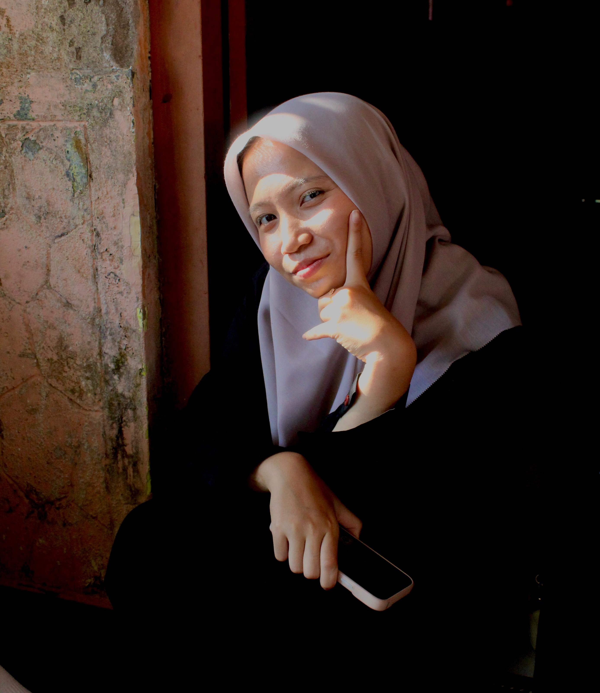

Perkenalkan nama saya Calista Trisna Putri, sering dipanggil Tata. Saya merupakan anak pertama dari tiga bersaudara. Saya adalah mahasiswa Universitas Sebelas Maret pada program studi Pendidikan Teknik Informatika dan Komputer. Pada semester 3 ini, salah satu mata kuliah yang saya ambil adalah Desain web. Pada matkul ini, saya akan belajar teori dan praktik untuk merancang tampilan, struktur, serta pengalaman visual sebuah situs internet agar menarik dan mudah digunakan.
Sebelum menempuh pendidikan tinggi, saya menyelesaikan kewajiban pengabdian di pondok pesantren. Pengalaman wajib ini membentuk karakter saya dalam memahami satu sama lain, saling menjaga dan menguatkan sesama teman pengabdian, serta mengemban tanggung jawab mengasuh anak didik. Pengalaman tersebut menumbuhkan jiwa sosial dan rasa empati yang tinggi. Di waktu luang, saya memanfaatkan waktu untuk menonton film. Bagi saya, menonton film bukan sekadar hiburan, melainkan cara untuk memahami sudut pandang orang lain, mengasah empati, dan menggali inspirasi visual maupun cerita. Dipadukan dengan kegemaran membaca dan menulis kata-kata sederhana yang bermakna, hal ini mendorong ketertarikan saya pada dunia perancangan web. Meskipun saat ini masih dalam proses belajar dan belum sepenuhnya menguasai desain web, saya memiliki komitmen tinggi untuk terus berlatih menata tampilan digital yang rapi, harmonis, dan nyaman dilihat mata.
Berikut adalah pengalaman saya.
Pengabdian Pondok Pesantren
Pengalaman ini membentuk karakter kepemimpinan, komunikasi yang efektif, serta rasa empati dan kepedulian sosial yang tinggi.
Silakan hubungi saya melalui email mahasiswa atau media sosial resmi PTIK UNS.
Selamat datang di website profil Tata!
Pada mata kuliah Desain Web ini, saya belajar teori dan praktik untuk merancang tampilan, struktur, serta pengalaman visual sebuah situs internet agar menarik dan mudah digunakan.